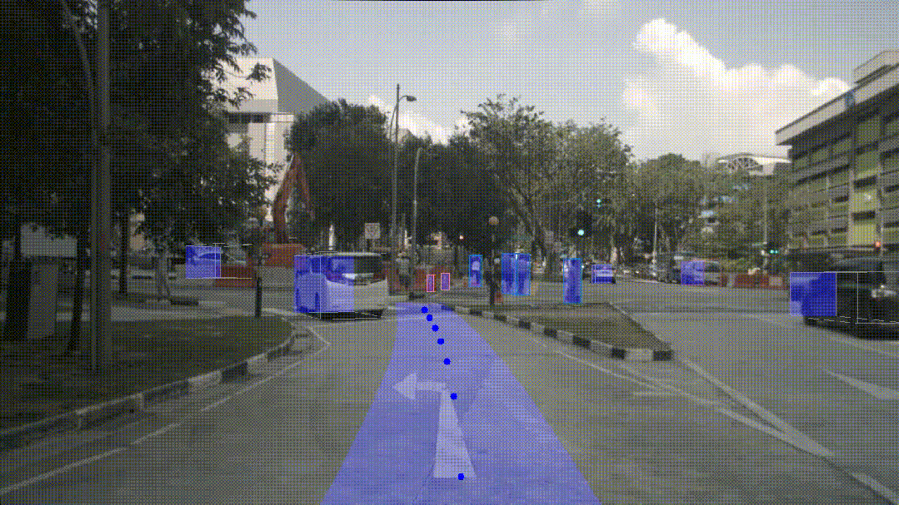
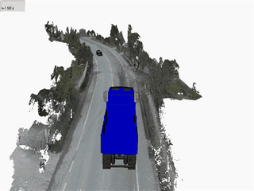
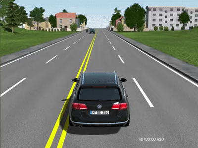
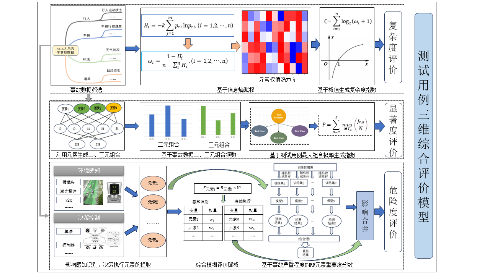

智行安全课题组
Intelligent Transportation Safety Research Group
西华大学 汽车与交通学院 道路交通安全团队

本方向聚焦AI在事故调查及自动驾驶方向的应用，将不同AI应用于工作领域。
核心研究内容：
应用成果： 目前基于开源生成式 AI 与领域知识库构建，已成功开发AI标准分析平台，申请软著《司法鉴定质控智慧辅助系统V1.0》

本方向聚焦道路交通事故，尤其是智能网联汽车事故的深度调查与精准重建，结合多源数据融合技术，建立科学、系统的事故分析重建方法。
核心研究内容：
应用成果： 相关研究成果获得四川省科技进步二等奖一项、研制国家标准三项《GB/T45415-2025 纯电动汽车火灾缺陷分析方法》、《GB/T45416-2025 碰撞事故车辆调查与安全缺陷分析指南》、《GB/T45417-2025 汽车再生制动功能缺陷分析指南》

针对自动驾驶系统测试覆盖性不足、极端场景缺失等问题，开展测试场景的生成、筛选与验证研究，构建高风险、高价值的测试场景库。
核心研究内容：
应用成果： 相关研究成果已应用于多家主机厂进行实车自动驾驶功能的研发测试，推动自动驾驶安全技术发展。

围绕自动驾驶系统的安全性评价需求，建立多维度、可量化的安全测评体系，为自动驾驶技术落地应用提供科学的评价依据。
核心研究内容：
应用成果： 相关研究成果已在多家权威检测机构落地应用，支撑实车测试与安全评价工作；同时发表多篇SCI 论文，实现了工程实践与学术创新的双向赋能。